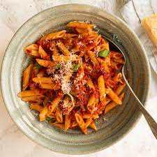

Penne Amatriciana

Penne Alla Amatriciana is another simple Italian pasta dish developed in the early stages of Rome. Many of these simple dishes came about due to how high the quality of ingrediants were.
Ingrediants
- Penne
- Tomato Sauce
- Pancetta
- Pepper and Salt
Directions
- Add the penne to the boiling water
- In a seperate pan, begin to cook the pancetta until golden brown
- Add the tomato sauce to the pan
- Add the pasta to the sauce, and season to your likning